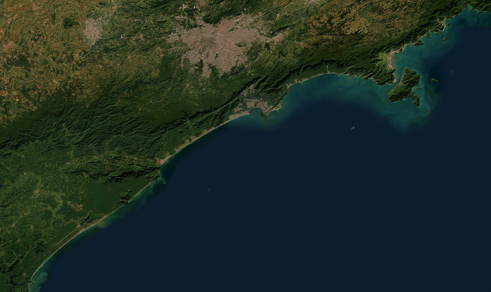
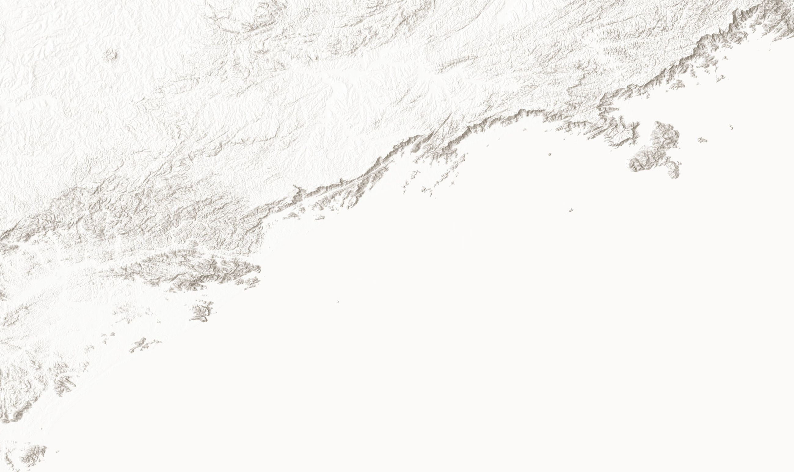

Municípios monitorados
—
—
Carregando dados do litoral...
Consultando a API do Algamar
Municípios monitorados
—
—
Alertas de algas tóxicas
—
—
Risco alto de floração
—
—
Nível de risco de floração
—
na maior parte do litoral
Condições atuais
—
Carregando clima...


Nenhum ponto retornado pela API para os filtros atuais.
Carregando pontos do mapa...
Hoje
Carregando estado do litoral...
Filtros
Risco de floração (previsão)
| Região | Prob. | Risco | Período |
|---|---|---|---|
| Carregando... | |||
Carregando...

O Algamar utiliza dados ambientais, modelos preditivos e inteligência artificial para antecipar e monitorar florações de algas tóxicas no litoral paulista.
Saiba mais